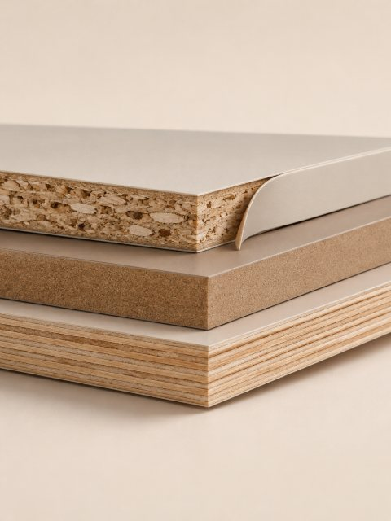
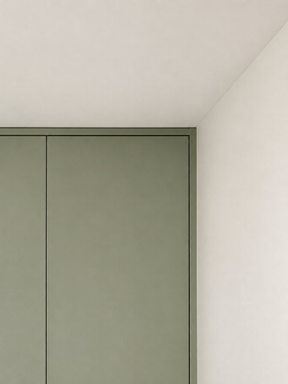
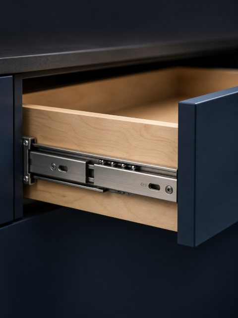
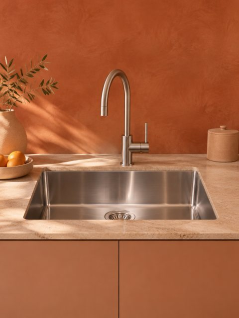

매거진
맞춤 가구를 고르고 짓는 데 필요한 이야기를 책장에 모읍니다. 책을 골라 읽어 보세요.
‹
›

01
MAGAZINE · 자재
MATERIAL
자재
보드부터 엣지까지, 가구 자재 읽는 법
읽는 시간 약 5분

02
MAGAZINE · 설치
INSTALL
설치
몰딩 · 휠라 · 쫄 · 무몰딩, 가구 끝 마감 구분하기
읽는 시간 약 4분

03
MAGAZINE · 하드웨어
HARDWARE
하드웨어
서랍레일 · 망장 · 쇼바 · 리프트업, 여닫는 철물 고르기
읽는 시간 약 5분

04
MAGAZINE · 주방기기
KITCHEN
주방기기
싱크볼 · 수전 · 후드 · 쿡탑, 가구보다 먼저 정하는 이유
읽는 시간 약 5분
05
MAGAZINE · 하드웨어
RAIL
하드웨어
서랍레일, 볼레일 · 언더레일 · 박스 시스템 읽기
읽는 시간 약 6분
시공사례 보기